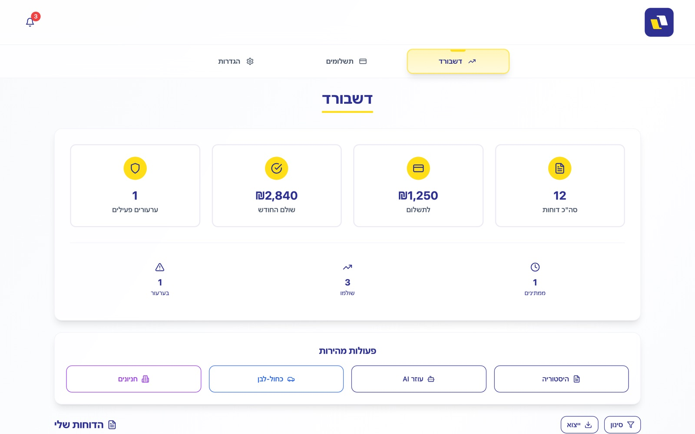
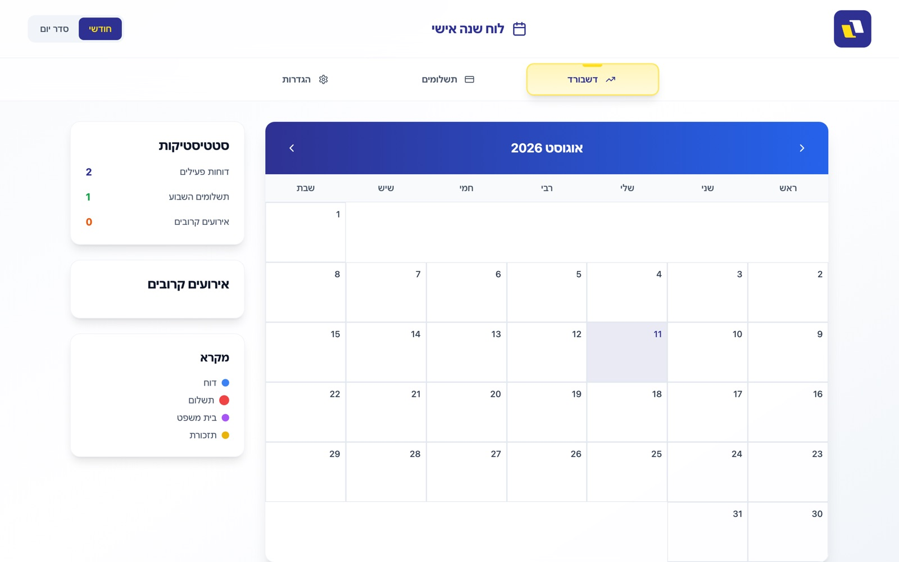
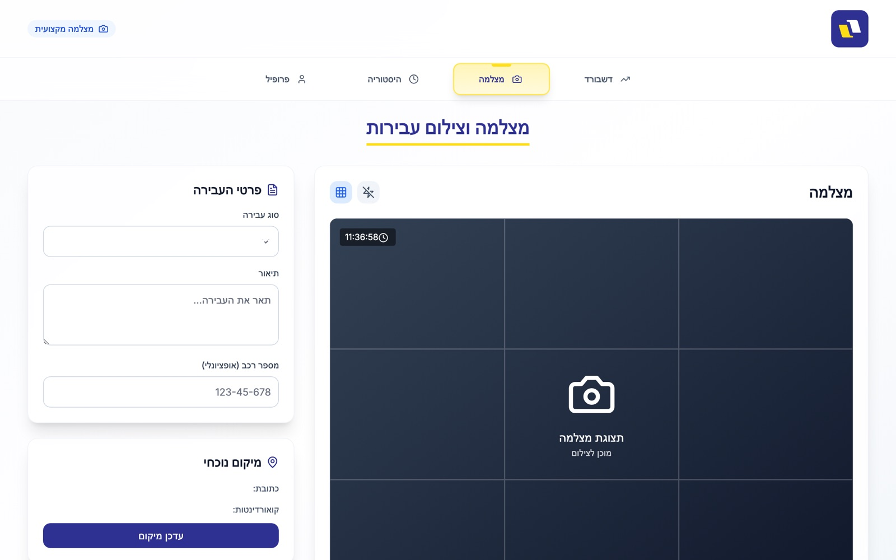
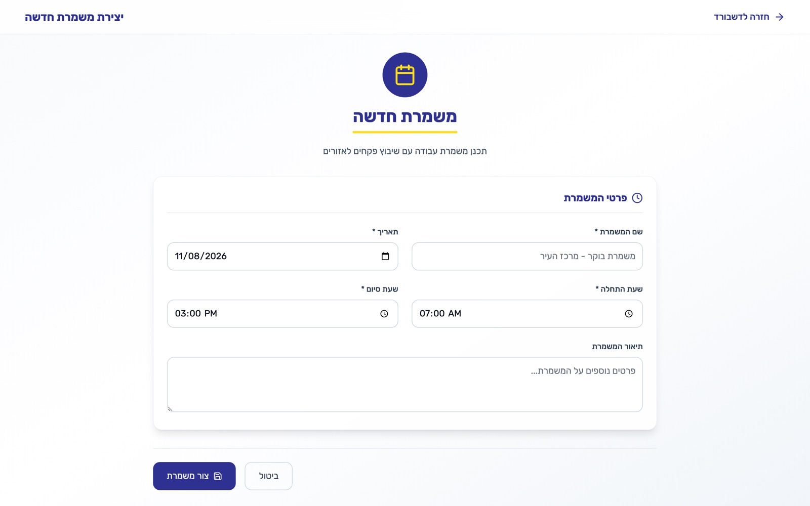
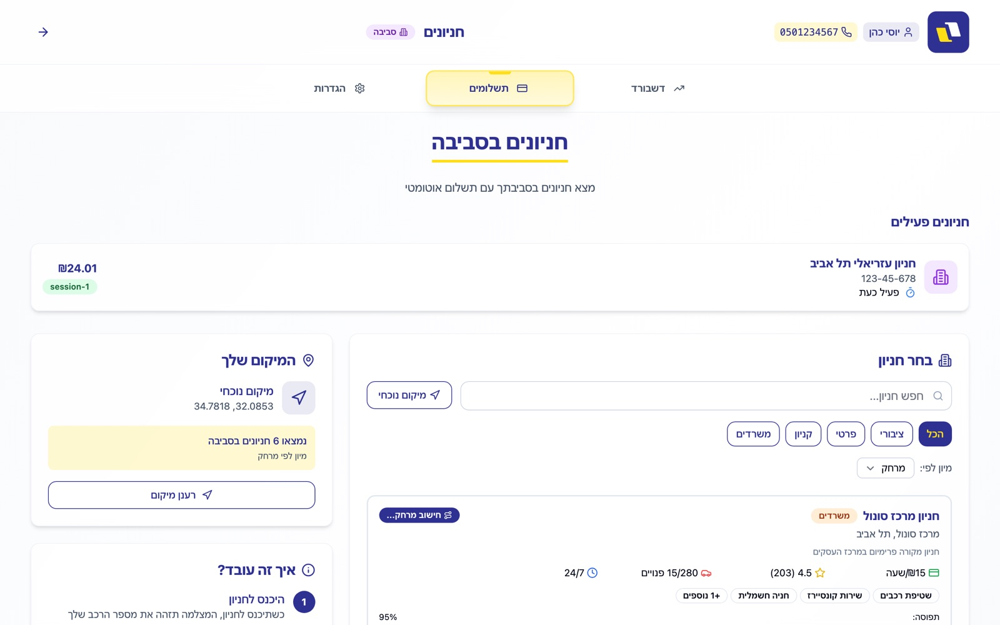

The screens
Positioning
The audience here is decision-makers at a municipality, not consumers — so the message leads by removing budget risk: pay only on success, no fixed costs. The brand blue #2E3192 signals institution and authority; the yellow #FFDE17 is reserved for points of action.

The citizen app
The citizen meets this system at an unpleasant moment — they've just been fined. So the dashboard doesn't open with a list of debts but with a calm status view: how many tickets, how much to pay, how many under appeal. The appeal is presented as an equal to payment rather than buried — a product decision that reduces frustration and calls to the municipality.


The officer app
Built for someone working standing, one-handed, in the sun. Violation types are large cards with the amount printed on them, not a dropdown. The camera screen shows a rule-of-thirds grid, a live clock and an adjacent form, so evidence and documentation are created in the same moment on the same screen.


Authority · BI
The screen that sells the system to a municipality. Four metrics across the top — tickets, revenue, active officers and completion rate — each with a delta against the previous period in green or red. Below, a breakdown by violation type with volume and amount side by side, so someone can decide where to place officers tomorrow.

Operations
Behind enforcement sits operations: who works, when, and in which zone. The forms carry sensible defaults — a morning shift opens at 07:00–15:00 on today's date — so a routine shift is one click and adjustment is only needed for exceptions. Parking zones are the same data model seen from the citizen side.

